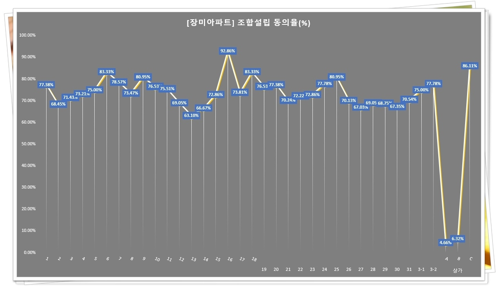

잠실 조선 시대에 양잠을 장려하고자 왕실 또는 관부가 시범소로서 특정한 지역에 설치한 누에치는 장소였다. 태종 16년(1416) 2월에 경기도 가평의 조종(朝宗), 양근의 미원(迷原) 두 곳에 최초로 잠실을 설치한 이후 이듬해 1월에 시범지의 전국적인 배치를 도모하여 개성•가평•청풍•태인•수안•의성•홍천 등지에 도회잠실(都會蠶室)을 설치하였다.
이로써 평안, 함경도를 제외한 전국 6도에 1곳의 잠실도회를 두었는데 서울 일대의 잠실은 모두 왕비의 선잠(先蠶)과 관련되거나, 왕실에 의해 운영되었던 것으로 세종 때에는 경복궁과 창덕궁에 내잠실(內蠶室)이 있었고 낙천정(樂天亭, 뚝섬)에 외잠실(外蠶室)이 있었다. 현재의 잠실동, 잠원동은 이때 생긴 지명이다.
세조대에는 아차산의 동잠실(東蠶室)과 연희궁의 잠실이 더 설치되었고 성종대에 한강변 원단동(圓壇洞, 현 잠원동)에 신잠실이 두어졌다는 기록이 전해진다. 그러나 실제적으로 조선 시대의 잠실은 운영상 여러가지의 폐단이 생겨 몇 차례 존폐를 거듭하였던 것으로 알려져 있다. 이처럼 누에를 키워 이용하는 것은 국가에 장려하는 행사였다.
누에는 고조선(古朝鮮)시대에 기자조선(箕子朝鮮)을 세웠다는 기자(箕子)가 중국에서 가져온 벌레로 전해진다. 오래전부터 한국인과 함께 하면서 길러 왔기 때문에 명칭도 다양하다. 알에서 깨어난 새끼는 묘, 검은 털을 벗지 못한 새끼를 의자(蟻子), 세 번째 잠자는 누에는 삼유(三幼), 27일 된 것을 잠노(蠶老), 늙은 것을 홍잠(紅蠶), 번데기를 용(踊), 성체를 아(蛾), 고치를 견(繭), 똥을 잠사(蠶砂)라 하였다고 한다. (한국민족문화대백과 일부 참조)